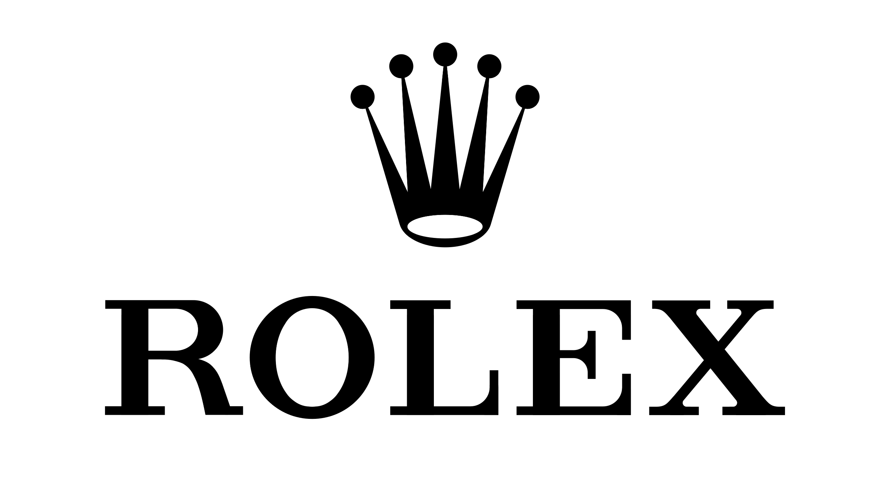

Personally Curated
Every listing is selected for condition, presence, and long-term desirability rather than volume.
From timeless classics to modern icons, every piece is selected with care.

Watch Flow is a personal reseller based in Amsterdam. Every timepiece is handpicked, verified, and sold with full transparency. No auctions, no surprises.
Why Watch Flow
Every listing is selected for condition, presence, and long-term desirability rather than volume.
Clear communication, honest condition notes, and a straightforward buying experience without marketplace noise.
Whether buying or selling, Watch Flow keeps the process personal, secure, and intentionally paced.
Featured Drops
Client Experience
“Watch Flow made the process feel calm, direct, and genuinely personal.”
Private Client, Amsterdam
Selling With Watch Flow
Receive a considered valuation, direct contact, and a secure process tailored to the piece you are offering.